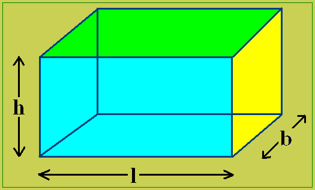
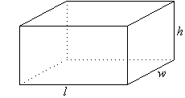

Volume of a Cuboid Formula:
Let height of the cuboids be h, length be l and width be b, then the volume of
the cuboid is nothing but the product of the three terms, i.e.
Volume of cuboid = (length x height x width) cubic units

Total Surface Area of a Cuboid:
The total surface area (TSA) of a cuboid is the sum of the areas of its six faces
